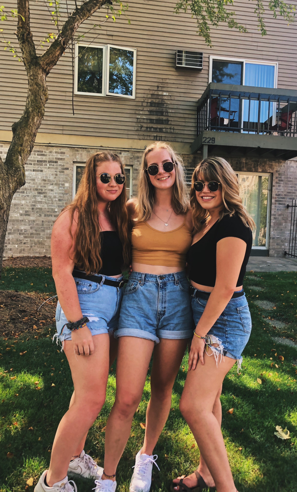
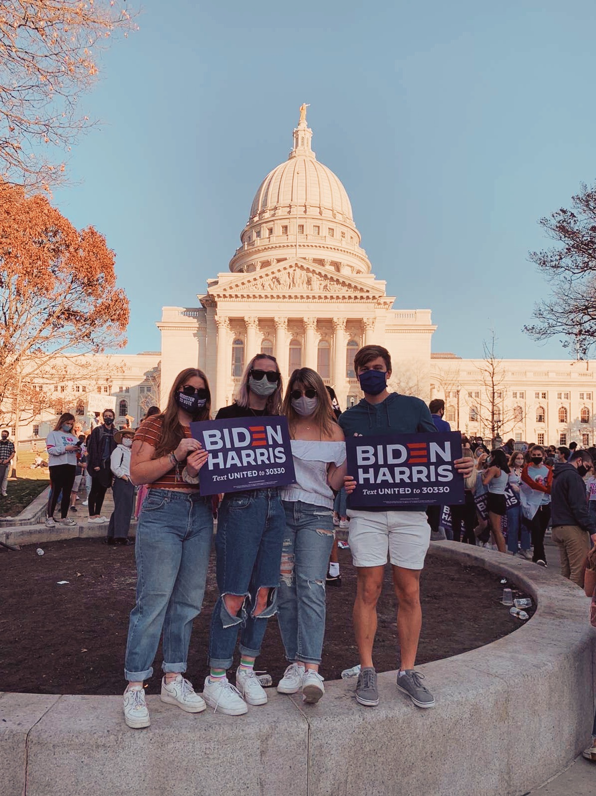

UW re-opened to students for the Fall Semester, with restrictions to prevent the spread of COVID-19. I moved into a new apartment closer to the downtown area! Here is a photo of my roommates and I.
Game days were a little different than normal this year, since fans were not allowed into the stadium. My friends in my immediate circle still decided to dress up and watch the games together!

Joe Biden won the 2020 presidential election. My friends and I decided to celebrate this historic election at the capital!
I cannot wait to see what next semester will look like!